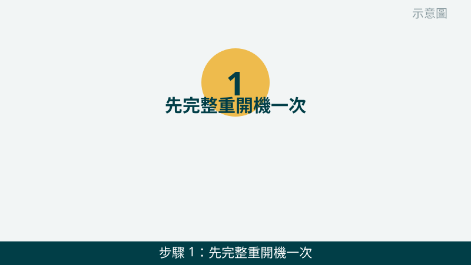
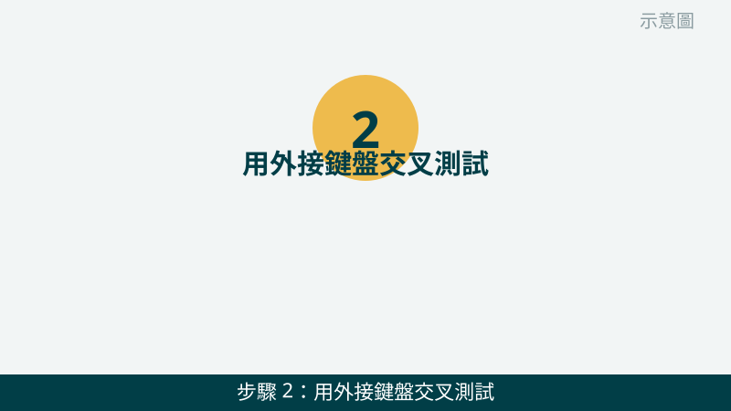
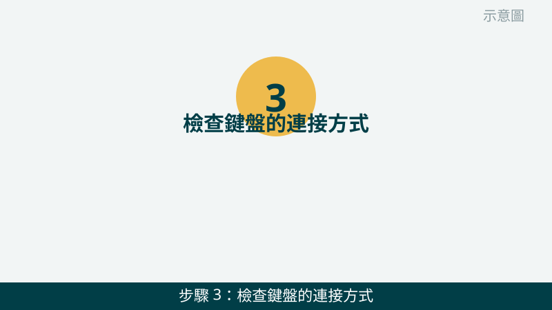
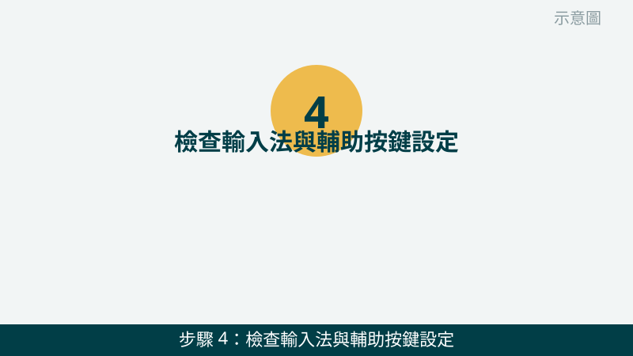
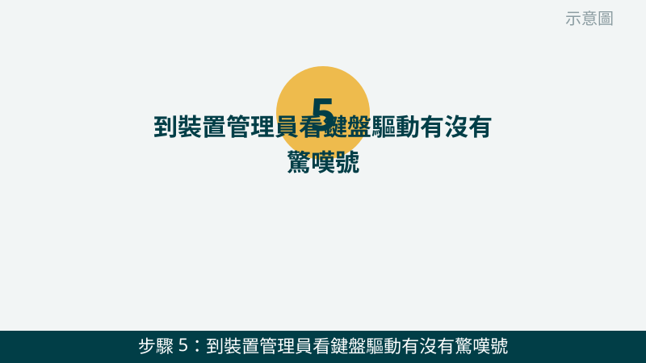
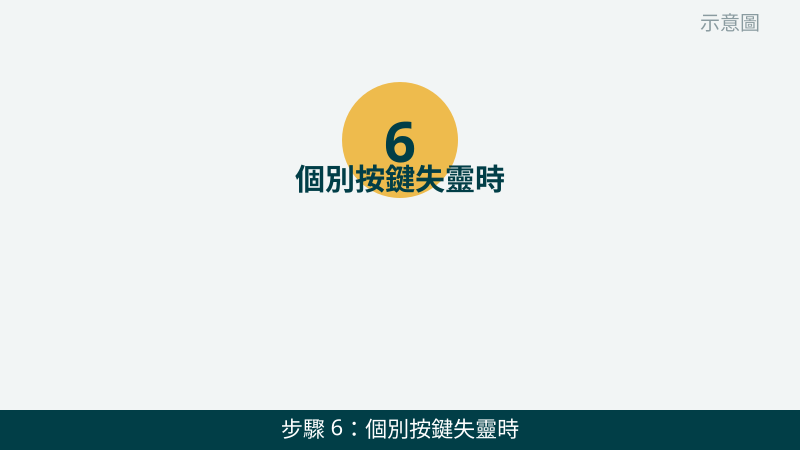

先跟您說明一個關鍵判斷：「整組都沒反應」和「只有幾個按鍵失靈」是兩種故事。整組沒反應，比較像是連接、驅動或系統設定的問題；只有個別按鍵失靈，比較像是卡垢、按鍵本身或排線的問題。您先分清屬於哪一種，檢查會快很多。
開始之前也請您注意一件事：筆電的內接鍵盤結構比較精細，鍵帽和排線都不適合硬拔硬拆。如果檢查中遇到不確定的步驟，請先停下來拍照問我們，不要硬試，以免小問題變成大問題。
鍵盤的狀況先傳給我們看
把失靈按鍵的位置、外接鍵盤測試的結果拍下來傳 LINE，通常能先判斷是整組問題還是個別按鍵問題。先免費評估、報價透明，確認後再預約維修。
鍵盤失靈自救檢查清單（由簡到難）
- 1. 先完整重開機一次，不要只用睡眠喚醒。請點「重新啟動」讓電腦完整重開，開機後先開記事本試打幾個字。怎麼判斷：重開後鍵盤恢復正常，代表多半是系統暫時卡住；重開後還是一樣，再往下查。

示意圖（非官方截圖） - 2. 用外接鍵盤交叉測試，這是最關鍵的一步。請找一組有線鍵盤接上電腦試打。怎麼判斷：外接鍵盤打字正常，問題多半在筆電內接鍵盤本身或其排線；外接鍵盤也一樣打不出字，問題多半在連接、設定或驅動，請繼續往下查。

示意圖（非官方截圖） - 3. 檢查鍵盤的連接方式。有線鍵盤請換一個 USB 孔重插，確認插頭有插緊；無線鍵盤請先換新電池，把接收器換個孔、離鍵盤近一點再試；藍牙鍵盤請先取消配對再重新配對一次。怎麼判斷：換孔、換電池後恢復正常，就是連接或電力問題；換了還是一樣，再往設定查。如果不確定接收器或配對步驟，請先拍照問我們。

示意圖（非官方截圖） - 4. 檢查輸入法與輔助按鍵設定。請看右下角的語言列是不是切到想要的輸入法，再確認大小寫鎖定鍵、數字鎖定鍵有沒有誤觸；接著到 Windows 設定裡看「篩選鍵」「黏滯鍵」是不是不小心被開啟了，誤開會讓按鍵反應變慢或沒反應。怎麼判斷：切回正確輸入法、關掉誤開的輔助設定後打字恢復，就是設定問題。

示意圖（非官方截圖） - 5. 到裝置管理員看鍵盤驅動有沒有驚嘆號。請在裝置管理員裡找到鍵盤裝置，看旁邊有沒有黃色驚嘆號；有的話先試著按右鍵「停用裝置」再「啟用裝置」，或選「更新驅動程式」。怎麼判斷：驚嘆號消失、鍵盤恢復打字，就是驅動問題；如果您不確定該點哪一個裝置，請先拍照問我們，不要隨便解除安裝裝置。

示意圖（非官方截圖） - 6. 個別按鍵失靈時，先輕清鍵縫，不要硬拔鍵帽。請先關機，用氣吹或軟毛刷輕輕清理按鍵縫隙的灰塵，再輕壓失靈的按鍵試試。怎麼判斷：清完灰塵後按鍵恢復，就是卡垢問題；清完還是失靈，或鍵帽已經鬆動、按下去沒有回彈感，就不要再硬壓硬拔。筆電內接鍵盤請不要自己拆鍵帽或拆機，先拍照問我們。

示意圖（非官方截圖）
別再自己試了：出現這些情況，請先停手
- 鍵盤或筆電曾經潑到液體——請先關機、不要再開機通電測試，也不要倒過來用力甩水，先拍照問我們
- 鍵帽已經鬆動、斷腳，或按下去卡住彈不回來——不要硬拔、硬裝，以免排線或卡扣跟著損壞
- 想自己拆筆電鍵盤、拆機檢查排線但不確定怎麼拆——請先拍照問我們，不要硬拆
- 按鍵亂跳、連打不停，又伴隨機身發熱或異味——請先停用、關機，拍照問我們再決定下一步
如果您的鍵盤是打字正常、但某些符號或功能鍵特別不順，也建議把失靈按鍵的位置和外接測試結果一起拍下來傳給我們，判斷會更精準。我們的檢測會把內接鍵盤、排線與系統設定一起交叉比對，找出真正的問題再報價給您。
常見問題
外接鍵盤正常，代表筆電鍵盤一定壞了嗎？
很可能是內接鍵盤本身或其排線的問題，但還不能完全確定。外接鍵盤正常只代表系統和輸入功能是好的，內接鍵盤、排線或主機板端都還需要實機檢測才能確認，這部分評估不收費，請放心把測試結果拍下來傳給我們。
個別按鍵失靈，可以只換一個按鍵就好嗎？
要看您的機型而定。有些機型可以單獨處理鍵帽或按鍵結構，有些機型則需要整組鍵盤更換。請把機型和失靈按鍵的位置拍下來傳給我們，我們會先說明可行的處理方式並報價給您確認，再決定要不要維修。
鍵盤不小心潑到水，晾乾後還能繼續用嗎？
不建議您自己晾乾後就直接通電測試。液體可能已經滲到鍵盤下方或主機板，通電後反而可能造成短路或腐蝕。請先關機、不要再開機，拍照問我們，我們會告訴您下一步該怎麼處理比較安全。